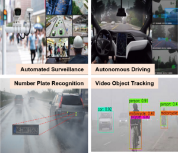

Machine Learning meets wireless communication
- Machine learning-based solutions play an instrumental role since they learn the optimal strategy iteratively by interacting with the wireless environment without requiring the knowledge of system parameters. We are exploring practically implementable machine learning based solutions within the context of 5G/6G wireless technologies.
- Arghyadip Roy
- Ratnajit Bhattacharjee
Mastering real-world reliability and predictions
- Statistical modeling is vital in fields like manufacturing, pharmaceuticals, and finance. It helps understand data patterns, minimize risks, and predict future lifetimes. We focus on reliability analysis of electrical/mechanical products and civil structures like bridges. Our research involves modeling, inference, and future predictions under real-world scenarios.
- Amulya Kumar Mahto

Uncovering audio science and building intelligence
- We aim to understand the physics associated with sound creation and how the human brain learns about aspects associated with it. We build signal processing models to analyze audio signals, machine learning approaches to extract information from these signals, and human behavioral experiments to collect data which allows building AI models based on human cognitive understanding.
- Neeraj Kumar Sharma

Signal processing and data analytics for healthcare
- Our goal is to further automated information extraction from body signals (sound, symptoms, etc.). We aim to design remote, cost-effective, and scalable disease screening methodologies.
- Debanga Raj Neog
- Neeraj Kumar Sharma

Measurement, modeling, and animation of eye and facial movements
- Creating realistic computer-generated animations of eyes and faces is a very important problem in computer graphics. We use vision-based systems to capture data and pursue a data-driven approach for the measurement, modeling, and animation of the deformation of facial tissues.
- Debanga Raj Neog

Statistical modeling
- Statistical modeling of a physical phenomenon underpins much of modern research in science and engineering. The right model can help optimize the use of resources, thereby reducing costs and maximizing profits and improving quality, and minimizing risk. Currently, we are interested in analyzing non-linear non-stationary signal processing models to gain insights from physical signals, understand their behavior, spot anomalies, and forecast likely future values.
- Rhythm Grover

Equitable Precision Medicine
- The long-term cumulative data disadvantage experienced by certain ethnicities raises the need to develop racially unbiased AI models to achieve health equity. To surmount this challenge, transfer learning is being used to enhance the performance of artificial intelligent models for data-disadvantaged groups. Additionally, establishing open resources for leveraging transfer learning in developing racially unbiased artificial intelligent models is envisioned.
- Teena Sharma

Computer Vision and Image Processing
- The goal is to develop advanced artificial intelligent algorithms for vision-based applications, including image enhancement for haze, non-uniform illumination, and noise. The exploration extends to object detection, classification, identification, and recognition domains to develop robust solutions. Looking ahead, the vision involves refining and expanding these algorithms to continually push the boundaries of performance and contribute to the evolution of cutting-edge vision technologies.
- Teena Sharma
- Prashant W. Patil

Automated Applications in Adverse Real-world Scenarios
- The adverse scenarios like fog, snow, rain, haze or their combinations often degrade the quality of videos recorded for AI based applications such as automated surveillance, traffic monitoring, activity recognition, object tracking and autonomous driving. Our long-term goal is to design an advanced algorithms for resorting the degraded videos to maintain the significant performance of these automated applications in all possible adverse real-world conditions.
- Prashant W. Patil